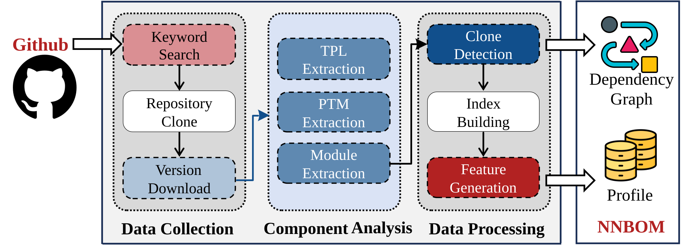

As AI supply-chain security becomes crucial, a practical, auditable Bill of Materials (BOM) for AI systems is needed. NNBOM provides a minimal, implementable baseline tailored for neural networks—where dependency chains are simpler and code reuse is higher. It catalogs and tracks three key artifacts from open-source AI projects: third-party libraries (TPLs), pretrained models (PTMs), and custom modules. This initial release aims to support future research, tooling, and downstream risk analysis. (covers 55,997 repositories)
Input: A GitHub repository URL (target repository to analyze).
Output: Component inventory and key metrics; highlights of outdated or newly added modules; recommended components based on co-usage patterns; a list of similar repositories by component similarity.
Input: A list of repositories.
Output: Aggregated growth and distribution statistics for TPLs, PTMs and modules; measures of module-level dependency expansion distinguishing reused vs newly created modules; reuse and evolution patterns across the corpus.